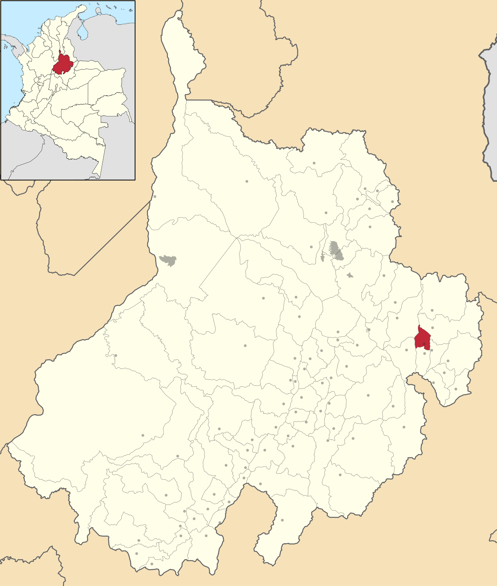

Ubicación Geográfica
Málaga, Santander - Colombia
Información Geográfica

Descripción General
Málaga es un municipio colombiano ubicado al suroriente del departamento de Santander, en la provincia de García Rovira. Está situado sobre la Troncal Central del Norte, a 124 km de Bucaramanga. Es una ciudad en la región andina de Colombia, reconocida por su patrimonio histórico y belleza natural.
Departamento
Santander
Provincia
García Rovira
Región
Andina de Colombia
Distancia a Bucaramanga
124 km
Vía de Acceso
Troncal Central del Norte
Posición
Suroriente de Santander
Características Destacadas
Clima Agradable
Temperatura templada característica de la región andina
Paisajes
Hermosos paisajes montañosos y naturales
Gastronomía
Rica tradición culinaria santandereana
Gente Acogedora
Hospitalidad característica de la región
Atractivos Turísticos
Málaga es un importante destino turístico que ofrece múltiples opciones para los visitantes, destacando especialmente por sus actividades de aventura y sus paisajes naturales.
Parque Nacional del Chicamocha
Parapente
Senderismo
Turismo Fotográfico
Patrimonio Histórico